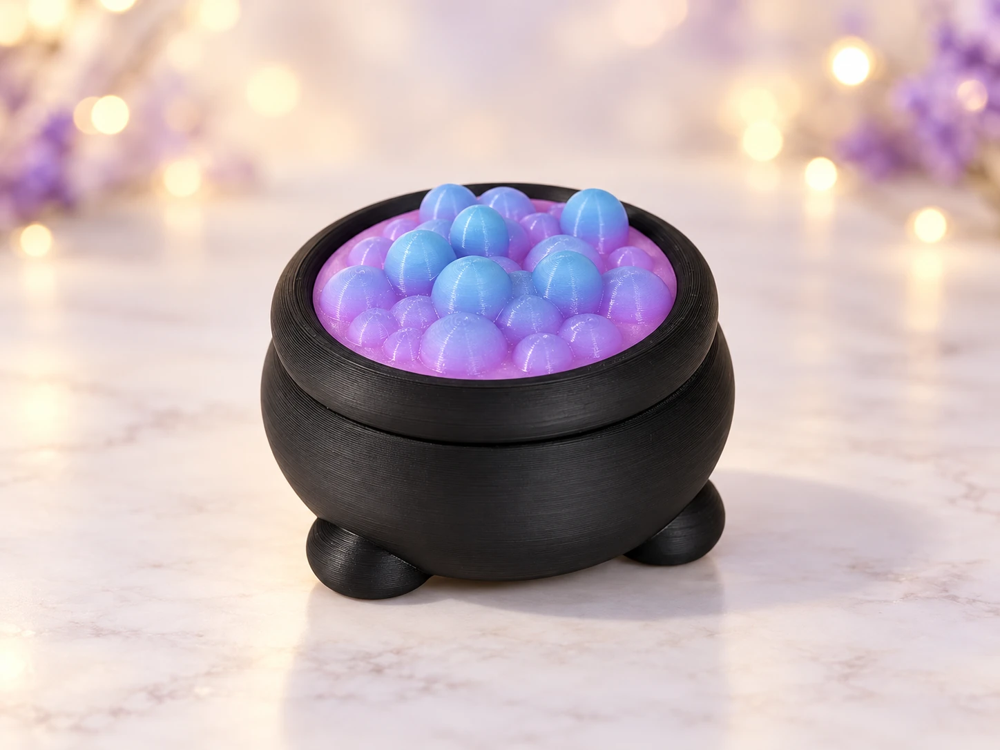
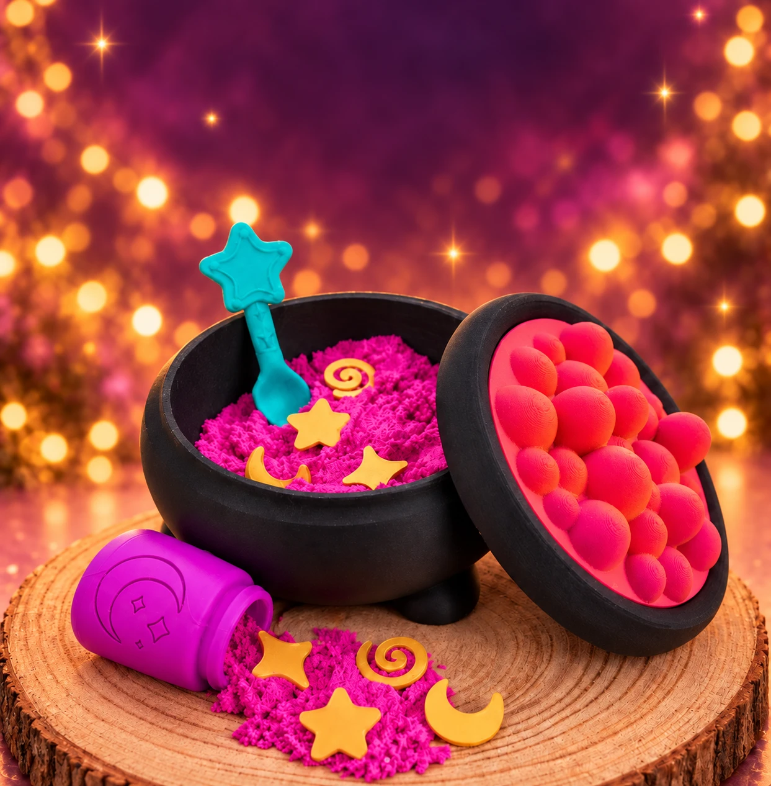
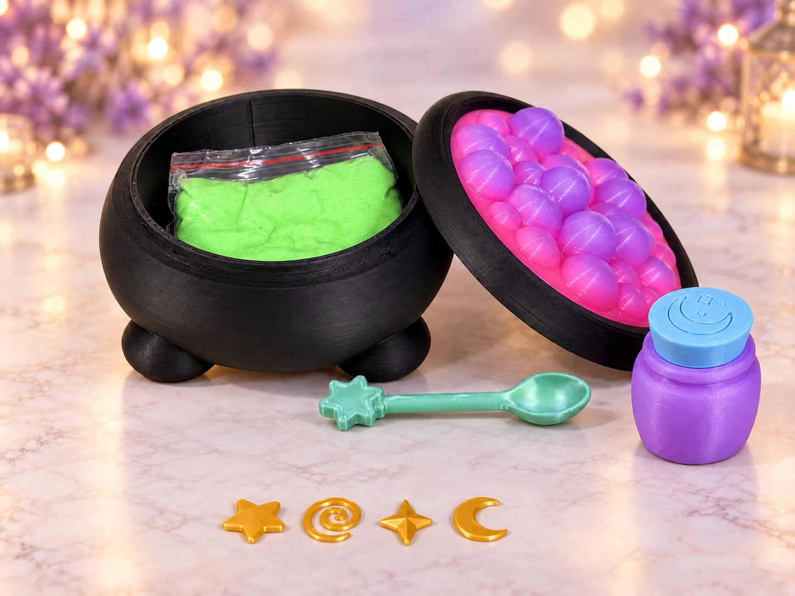
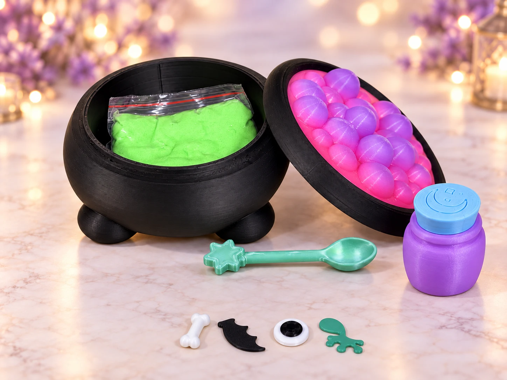
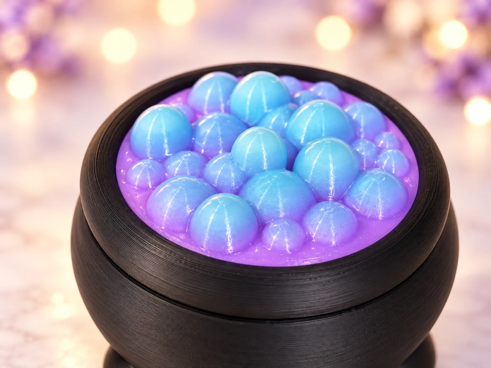
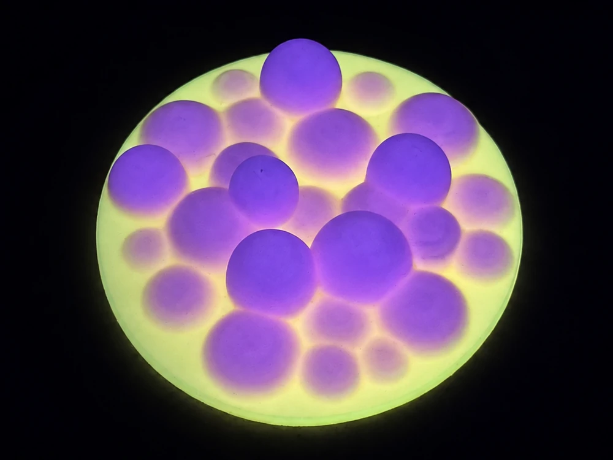

Example gradient

Golden charms, potion bottle, Spell Spoon, and sensory sand.

Frog legs, bone, bat wing, eye of newt, potion bottle, Spell Spoon, and sensory sand.


The rainbow bubble lid charges under light and glows in the dark.
Bubble lid shown in the dark. Colors and gradients vary.
Kit photos have been edited to show each configuration’s included accessories. Rainbow gradients vary, and potion bottle details differ slightly between the two kits.
A little bubble of magic.
A bubbling little world for sensory play, topped with rainbow bubbles that glow in the dark. The filament creates a different color gradient with every print, making each cauldron one of a kind.
Your rainbow bubble lid will vary from the photos. Exact colors and gradients cannot be guaranteed.
Every kit includes the cauldron with its one-of-a-kind rainbow glow-in-the-dark bubble top, sensory sand, a potion bottle, and a Spell Spoon.
Enchanted Potion: Includes golden charms and stars.
Witches Brew: Includes reagents: frog legs, bones, a bat wing, and eye of newt.
No rake, shovel, bucket, or play tray is included.
Vivid green sand is the default. We choose the sand color to complement your kit; sand-color selection is not available yet.
Secure Square checkout opens in a new tab. This page stays open so you can keep shopping.
Interested in a custom bubble color? Custom-color bubbles can be printed, but they do not glow in the dark. This checkout is for a rainbow glow-in-the-dark lid; custom-color ordering is not available here yet.
Shipping to the contiguous 48 US states and DC is a flat $9.99 per order. Free shipping on orders over $75 before discounts, taxes, and fees. Please allow 2–3 business days for processing. Overland Park orders may be hand-delivered by arrangement under the same pricing. Transit time is additional. Secure checkout and payment through Square.
THERE’S A WHOLE LITTLE WORLD HERE